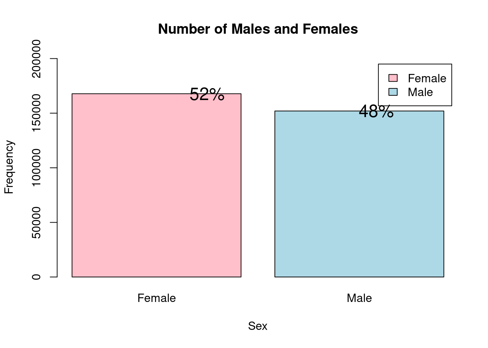
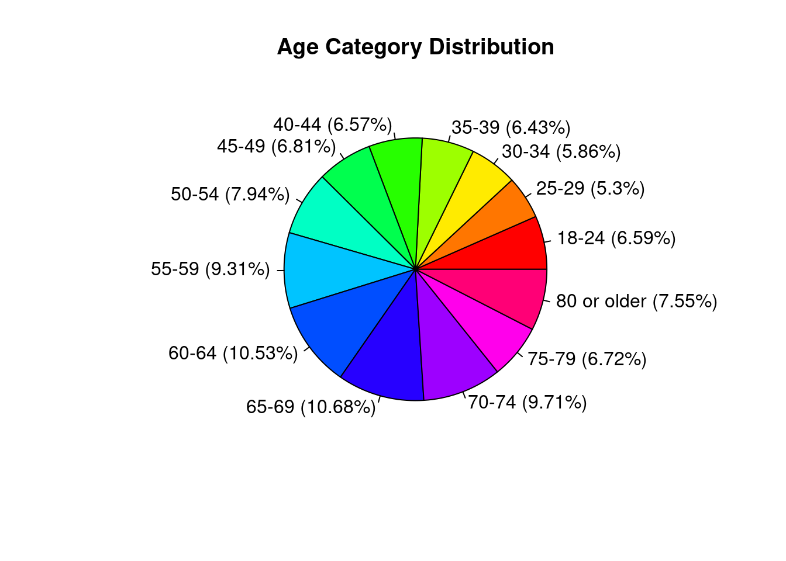
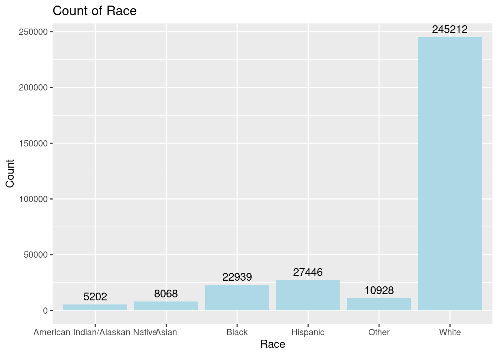
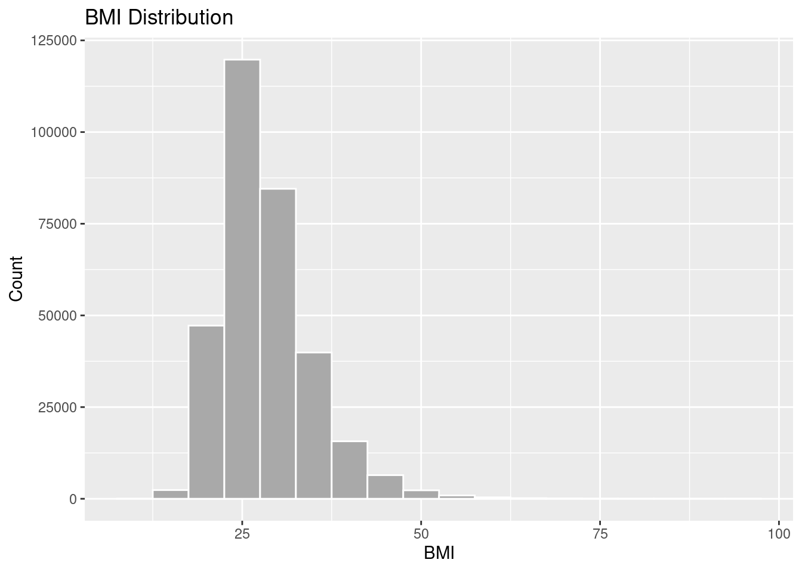

library(tidyverse)
knitr::opts_chunk$set(echo = TRUE, warning=FALSE, message=FALSE)Final Project Assignment#1: Aditya Salveru
final_Project_assignment_1
Behavioral Risk Factor Surveillance System (BRFSS)
Project & Data Description
Part 1. Introduction
My projects aims to analyze the heart disease data and explore the causes and general trends in the individuals with and without the heart disease. Particularly I am interested in finding the factors that contribute to the heart disease the most and early signs that might lead to a heart disease. I would also like to analyze the healthy habits that would keep the heart diseases away.
1. Dataset(s) Introduction:
I have chosedn the 2020 annual CDC survey data of 400k adults related to their health status collected by Behavioral Risk Factor Surveillance System (BRFSS). For people of the majority of racial groups in the US (African Americans, American Indians and Alaska Natives, and white people), heart disease is one of the leading causes of death, according to the CDC. High blood pressure, high cholesterol, and smoking are the three main risk factors for heart disease that at least half of all Americans (47%) have. Other key factors are diabetic status, obesity (high BMI), not obtaining enough physical activity or drinking too much alcohol. In the field of medicine, it is crucial to identify and combat the causes that have the biggest influence on heart disease.
The Behavioral Risk Factor Surveillance System (BRFSS) is a collaborative project between all the states in the United States and participating US territories and the Centers for Disease Control and Prevention (CDC). The BRFSS is administered and supported by CDC’s Population Health Surveillance Branch, under the Division of Population Health at CDC’s National Center for Chronic Disease Prevention and Health Promotion. The BRFSS is a system of ongoing health-related telephone surveys designed to collect data on health-related risk behaviors, chronic health conditions, health-care access, and use of preventive services from the non institutionalized adult population (≥ 18 years) residing in the United States and participating areas.
The original dataset contains over 300 columns and over 400k individual’s responses as rows. However, I have chosen a condensed version of the dataset available at Kaggle which has the attributes that we are really interested in and ignoring the rest of the columns.
2. What questions do you like to answer with this dataset(s)?
How is heart disease related to lifesyle habits such as sleep time, alcohol consumption, BMI etc.
Is there any particular group of people(Race, region) who are at high risk compared to the other people
Part 2. Describe the data set(s)
read the dataset;
data <- read.csv('./AdityaSalveru_FinalProjectData/heart_2020.csv')
data %>%
colnames() %>%
sort() [1] "AgeCategory" "AlcoholDrinking" "Asthma" "BMI"
[5] "Diabetic" "DiffWalking" "GenHealth" "HeartDisease"
[9] "KidneyDisease" "MentalHealth" "PhysicalActivity" "PhysicalHealth"
[13] "Race" "Sex" "SkinCancer" "SleepTime"
[17] "Smoking" "Stroke" The following are the coulmns in the dataset:
AgeCategory : Age category of the subject(divided into 14 categories)
AlcoholDrinking : Is the subject a heavy drinker(Men > 14 drinks/Week, Women > 7 drinks/Week)
Asthma: Does the subject have asthma
BMI: Body mass index of the subject
Diabetic: Is the subject diabetic
DiffWalking: Does the subject feel difficulty walking
GenHealth: What would the subject perceive his general health as?
HeartDisease: Does the Subject has coronary heart disease (CHD) or myocardial infarction (MI).
KidneyDisease: Does the subject have a kidney disease excluding stones, bladder infection.
MentalHealth: How many days in the past 30 days is the subject mentally ill.
PhysicalActivity: Has the subject
PhysicalHealth:How many days in the past 30 days is the subject physically ill.
Race: Race/ethenicity of the subject
Sex: Is the subject male or female
SkinCancer:Has the subject ever had skin cancer
SleepTime: On average how many hours does the subject sleep everyday.
Smoking: Does the subject smoke( atleast 100 cigaretts in the past)
Stroke: Has the subject ever had a stroke
summary(data) HeartDisease BMI Smoking AlcoholDrinking
Length:319795 Min. :12.02 Length:319795 Length:319795
Class :character 1st Qu.:24.03 Class :character Class :character
Mode :character Median :27.34 Mode :character Mode :character
Mean :28.33
3rd Qu.:31.42
Max. :94.85
Stroke PhysicalHealth MentalHealth DiffWalking
Length:319795 Min. : 0.000 Min. : 0.000 Length:319795
Class :character 1st Qu.: 0.000 1st Qu.: 0.000 Class :character
Mode :character Median : 0.000 Median : 0.000 Mode :character
Mean : 3.372 Mean : 3.898
3rd Qu.: 2.000 3rd Qu.: 3.000
Max. :30.000 Max. :30.000
Sex AgeCategory Race Diabetic
Length:319795 Length:319795 Length:319795 Length:319795
Class :character Class :character Class :character Class :character
Mode :character Mode :character Mode :character Mode :character
PhysicalActivity GenHealth SleepTime Asthma
Length:319795 Length:319795 Min. : 1.000 Length:319795
Class :character Class :character 1st Qu.: 6.000 Class :character
Mode :character Mode :character Median : 7.000 Mode :character
Mean : 7.097
3rd Qu.: 8.000
Max. :24.000
KidneyDisease SkinCancer
Length:319795 Length:319795
Class :character Class :character
Mode :character Mode :character
Distribution of Male and Female subjects for the data
# Create a table with the number of males and females
sex_table <- data %>%
select(Sex) %>%
table()
# Calculate the percentage of males and females
sex_percent <- round(prop.table(sex_table)*100)
# Create a bar plot of the sex data with percentages
barplot(sex_table, main="Number of Males and Females",
xlab="Sex", ylab="Frequency", col=c("pink", "lightblue"),
legend=c("Female", "Male"), ylim=c(0, max(sex_table)*1.2))
text(1:2, sex_table + 0.2, paste0(sex_percent, "%"), col = "black", cex = 1.5)
Distribution of Subjects across age groups
age_table <- data %>%
select(AgeCategory) %>%
table()
# Add percentages to the pie chart
percent <- round(100*age_table/sum(age_table), 2)
percent_str <- paste(percent, "%", sep="")
labels <- paste(names(age_table), " (", percent_str, ")", sep="")
pie(age_table, main="Age Category Distribution", labels=labels, col=rainbow(length(age_table)))
Distribution of Subjects across age groups
ggplot(data, aes(x = Race)) +
geom_bar(fill = "lightblue") +
xlab("Race") +
ylab("Count") +
ggtitle("Count of Race") +
geom_text(stat='count', aes(label=..count..), vjust=-0.5) 
Overview of BMI of the individuals as a Histogram
# create a histogram of the BMI data
ggplot(data = data, aes(x = BMI)) +
geom_histogram(binwidth = 5, fill = "darkgray", color = "white") +
labs(title = "BMI Distribution", x = "BMI", y = "Count")
3. The Tentative Plan for Visualization
One of the main factor that I would to study the relationship with heart disease the BMI of the people. Therefore I will create a box plot to analyze the BMIs of the people with and without heart disease. This Box plot would give an idea on how the BMIs of the people are distributed across the two classes of the people(with and without heart disease). I chose this box plot because the BMIs are continous numbers.
I would also like to study how age effects the possiblilt of heart diseases. specifically we need to find out what what is the age distribution of the people with heart disease and are there any age groups that are more likely to have heart disease as compared to other groups. Therefore I will be using histograms of number of people with heart disease with different ages.
One more important relation that I would like to study is how likely are people who smoke are to get a Heart Disease as compared to the people who does not smoke. For this I would like to careate a stacked bar plot with fill as Heart Disease. This we we can compare the percentage of people with heart disease for both the bars(Yes and No) for smoking.